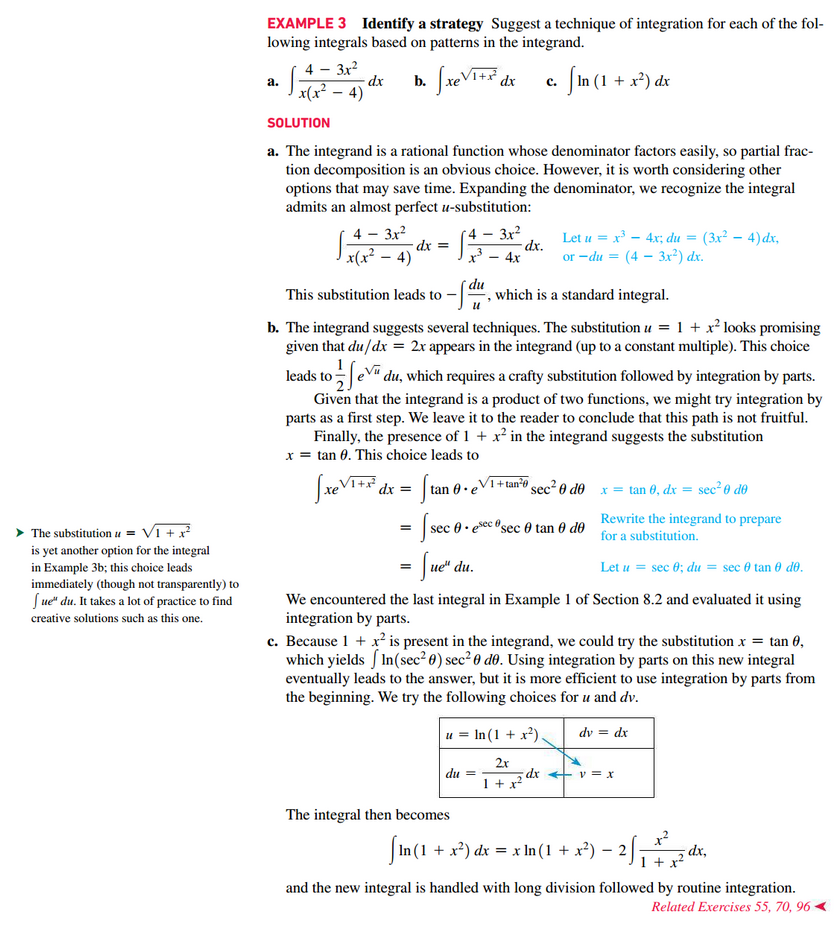

Section 8.6: Integration Strategies

Recognize A Common Pattern Present in the Integrand
- Integrating the product of two functions often calls for integration by parts (Section 8.2), particularly if the factors of the product are a polynomial and a transcendental function (a logarithmic, exponential, trigonometric, or inverse trigonometric function). In some cases, integegration by parts is successful when the integrand is a single function (for example, \(\int \ln(x)\;dx\) or \(\int \sin^{-1}(x)\;dx\))
- Powers and products or \(\sin(x)\) and \(\cos(x)\), \(\tan(x)\) and \(\sec(x)\), or \(\cot(x)\) and \(\csc(x)\) are integrated using identities, reduction formulas, or the substitutions given in Tables 8.2 and 8.3 of 📑 Section 8.3.
- Integrals containing the expression \(a^{2} - x^{2}, a^{2} + x^{2}\), or \(x^{2} - a^{2}\) may yield to trigonometric substitution. Use the substitutions given in Table 8.4 of 📑 Section 8.4 to tackle such integrals, but don’t overlook a simpler solution. For example, \(\int \frac{x}{1 - x^{2}}\;dx\) is most easily evaluatied using the substitution \(u = 1 - x^{2}\) rather than \(x = \sin(\theta)\)
- Use partial fraction decomposition (📑 Section 8.5) to integrate rational functions. Remember to first cancel common factors and to apply long division if the rational function is not proper.
 
Resources
Textbook
- Calculus, Early Transcendentals 3rd Edition - Briggs, Cochran, and Gillet